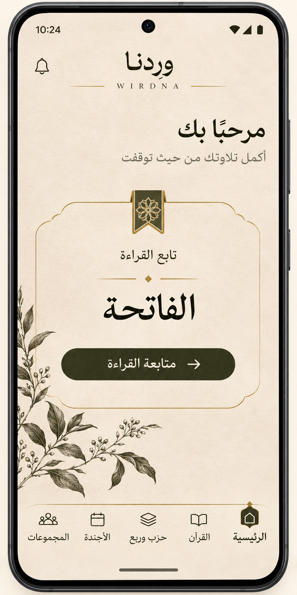
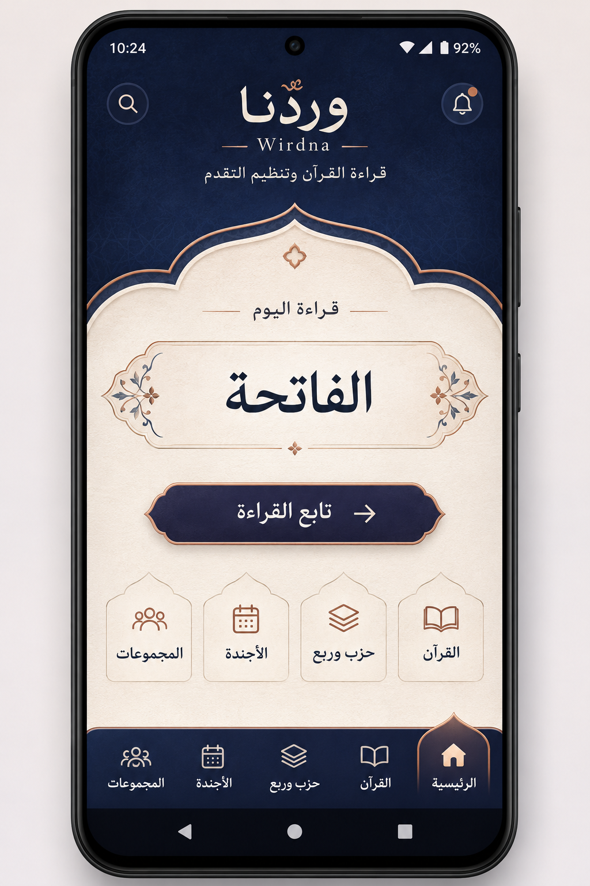
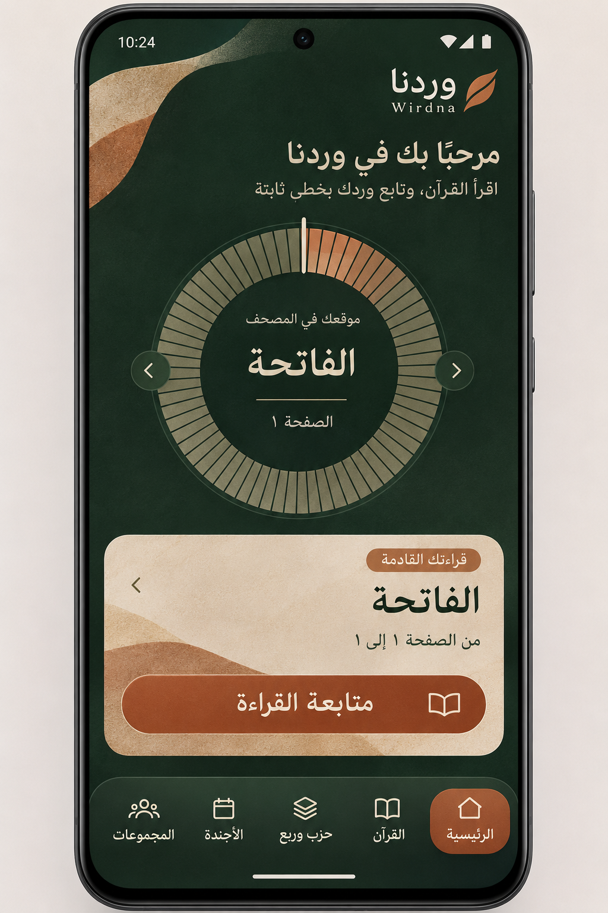

Arabic-led directions
Three generated references for the visual language, not implemented screens. Generated labels, text, data and navigation are illustrative and can be inaccurate; the app will use verified original copy, real saved data and the source destinations.
Selected direction: Compass. Carry forward cypress, chalk and terracotta, the contrast and Arabic hierarchy. Do not reproduce the decorative leaf, invented progress ring or fictional text. Design the dock around the original seven destinations, with accessible touch targets.

Folio
Ivory, ink and fine gold. The ornate framing and botanical illustration add more decoration than the task requires.
Index
Indigo and copper give strong contrast, but the repeated architectural ornament dominates the reading task.